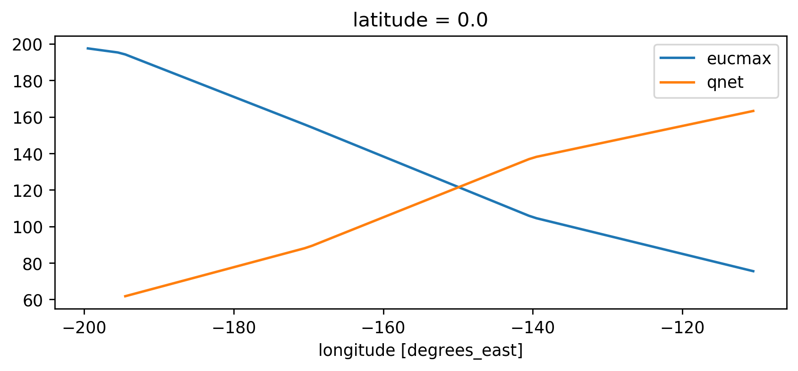
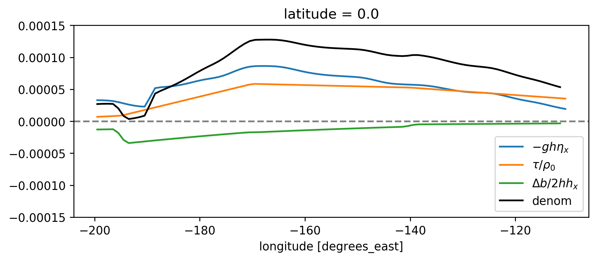

Simple model analysis
Contents
Simple model analysis#
%matplotlib inline
%load_ext autoreload
import dask
import matplotlib as mpl
import matplotlib.pyplot as plt
import numpy as np
import seawater as sw
import xarray as xr
import pop_tools
# %aimport xgcm
# import hvplot.xarray
import dcpy
import pump
mpl.rcParams['savefig.dpi'] = 300
mpl.rcParams['savefig.bbox'] = 'tight'
mpl.rcParams['figure.dpi'] = 140
xr.set_options(keep_attrs=True, display_style="html")
The autoreload extension is already loaded. To reload it, use:
%reload_ext autoreload
---------------------------------------------------------------------------
ModuleNotFoundError Traceback (most recent call last)
<ipython-input-1-d0b326038a8b> in <module>
8 import seawater as sw
9 import xarray as xr
---> 10 import pop_tools
11 # %aimport xgcm
12
ModuleNotFoundError: No module named 'pop_tools'
import distributed
import ncar_jobqueue
if 'client' in locals():
client.close(); cluster.close()
cluster = ncar_jobqueue.NCARCluster(
cores=9, processes=4, memory='109GB',
walltime='02:00:00', project='NCGD0043')
client = dask.distributed.Client(cluster)
cluster.adapt(minimum=4, maximum=24, wait_count=600)
cluster
Read data#
def estimate_euc_depth_terms(ds):
ds.load()
surface = {'depth': -20, 'method': 'nearest'}
ds['h'] = (ds.eucmax - surface['depth'])
ds['h'].attrs['long_name'] = '$h$'
if 'u' in ds:
ds['us'] = ds.u.sel(**surface)
ds['ueuc'] = ds.u.interp(depth=ds.eucmax, longitude=ds.longitude, method='linear')
ds['du'] = ds.us - ds.ueuc
ds.du.attrs['long_name'] = '$\Delta$u'
if 'dens' in ds:
ds['dens_euc'] = ds.dens.interp(depth=ds.eucmax,
longitude=ds.longitude,
method='linear')
ds['b'] = ds.dens * -9.81/ds.dens_euc
ds['bs'] = ds.b.sel(**surface)
ds['beuc'] = -9.81 * xr.ones_like(ds.bs)
ds['db'] = ds.bs - ds.beuc
ds.db.attrs['long_name'] = '$\Delta$b'
if 'db' in ds and 'du' in ds and 'h' in ds:
with xr.set_options(keep_attrs=False):
ds['Ri'] = ds.db * np.abs(ds.h) / (ds.du**2)
return ds
if 'gcm1' in locals():
import airsea
print('skipping gcm1, jra, ssh')
subset = (gcm1.annual.sel(latitude=0, method='nearest')
.assign_coords(latitude=0)
.squeeze()
.sel(depth=slice(0, -250)))
subset['dens'] = pump.mdjwf.dens(subset.salt, subset.theta, subset.depth)
subset['eucmax'] = pump.calc.get_euc_max(subset.u)
subset = estimate_euc_depth_terms(subset)
subset.attrs['name'] = 'gcm 1m 1996 mean'
jra = (pump.obs.read_jra()
.sel(latitude=0, method='nearest')
.sel(time='1996')
.load())
jra['tau'] = jra.Uwind.copy(
data=airsea.windstress.stress(np.hypot(jra.Uwind, jra.Vwind)))
mean_jra = jra.mean('time')
ssh = xr.open_mfdataset(pump.obs.root + 'make_TPOS_MITgcm/1996/SSH*.nc').zos
johnson = (pump.obs.read_johnson()
.sel(latitude=0))
johnson['eucmax'] = pump.get_euc_max(johnson.u)
johnson = estimate_euc_depth_terms(johnson)
johnson.attrs['name'] = 'Johnson'
# need to fill to the surface
tao_adcp = pump.obs.read_tao_adcp().mean('time').bfill('depth')
tao_adcp['eucmax'] = pump.get_euc_max(tao_adcp.u)
tao_ctd = (pump.obs.read_tao()
.sel(latitude=0, longitude=tao_adcp.longitude)
.drop(['u', 'v'])
.mean('time')
.compute())
tao_ctd['eucmax'] = tao_adcp.eucmax
tao_ctd['dens'] = pump.mdjwf.dens(np.array(35.0), tao_ctd.temp, tao_ctd.depth)
tao_ctd_raw = tao_ctd.copy(deep=True)
tao_ctd = (tao_ctd
.sortby('depth')
.interpolate_na('depth')
.sortby('depth', ascending=False)
.bfill('depth'))
tao = xr.merge([estimate_euc_depth_terms(tao_adcp)[['us', 'ueuc', 'du', 'eucmax']],
estimate_euc_depth_terms(tao_ctd)[['bs', 'beuc', 'db']]])
tao = estimate_euc_depth_terms(tao)
tao.attrs['name'] = 'TAO'
hires = xr.load_dataset('~/pump/glade/small-eq-mean.nc').sel(longitude=slice(-221, None))
hires['eucmax'] = (pump.calc.get_euc_max(hires.u)
.rolling(longitude=200, center=True, min_periods=1)
.mean())
hires = estimate_euc_depth_terms(hires)
/glade/u/home/dcherian/pump/pump/obs.py:170: FutureWarning: In xarray version 0.15 the default behaviour of `open_mfdataset`
will change. To retain the existing behavior, pass
combine='nested'. To use future default behavior, pass
combine='by_coords'. See
http://xarray.pydata.org/en/stable/combining.html#combining-multi
chunks={"lat": 1, "lon": 1, "depth": 5},
/gpfs/u/home/dcherian/python/xarray/xarray/backends/api.py:933: FutureWarning: The datasets supplied have global dimension coordinates. You may want
to use the new `combine_by_coords` function (or the
`combine='by_coords'` option to `open_mfdataset`) to order the datasets
before concatenation. Alternatively, to continue concatenating based
on the order the datasets are supplied in future, please use the new
`combine_nested` function (or the `combine='nested'` option to
open_mfdataset).The datasets supplied require both concatenation and merging. From
xarray version 0.15 this will operation will require either using the
new `combine_nested` function (or the `combine='nested'` option to
open_mfdataset), with a nested list structure such that you can combine
along the dimensions None. Alternatively if your datasets have global
dimension coordinates then you can use the new `combine_by_coords`
function.
from_openmfds=True,
/glade/u/home/dcherian/miniconda3/envs/dcpy/lib/python3.6/site-packages/dask/array/core.py:3864: PerformanceWarning: Increasing number of chunks by factor of 15
**blockwise_kwargs
/glade/u/home/dcherian/miniconda3/envs/dcpy/lib/python3.6/site-packages/dask/array/core.py:3864: PerformanceWarning: Increasing number of chunks by factor of 15
**blockwise_kwargs
/glade/u/home/dcherian/miniconda3/envs/dcpy/lib/python3.6/site-packages/dask/array/core.py:3864: PerformanceWarning: Increasing number of chunks by factor of 15
**blockwise_kwargs
/glade/u/home/dcherian/miniconda3/envs/dcpy/lib/python3.6/site-packages/dask/array/core.py:3864: PerformanceWarning: Increasing number of chunks by factor of 15
**blockwise_kwargs
/glade/u/home/dcherian/miniconda3/envs/dcpy/lib/python3.6/site-packages/dask/array/core.py:3864: PerformanceWarning: Increasing number of chunks by factor of 15
**blockwise_kwargs
/glade/u/home/dcherian/miniconda3/envs/dcpy/lib/python3.6/site-packages/dask/array/core.py:3864: PerformanceWarning: Increasing number of chunks by factor of 15
**blockwise_kwargs
/glade/u/home/dcherian/miniconda3/envs/dcpy/lib/python3.6/site-packages/dask/array/core.py:3864: PerformanceWarning: Increasing number of chunks by factor of 15
**blockwise_kwargs
/glade/u/home/dcherian/miniconda3/envs/dcpy/lib/python3.6/site-packages/dask/array/core.py:3864: PerformanceWarning: Increasing number of chunks by factor of 11
**blockwise_kwargs
/glade/u/home/dcherian/miniconda3/envs/dcpy/lib/python3.6/site-packages/dask/array/core.py:3864: PerformanceWarning: Increasing number of chunks by factor of 10
**blockwise_kwargs
/glade/u/home/dcherian/miniconda3/envs/dcpy/lib/python3.6/site-packages/dask/array/core.py:3864: PerformanceWarning: Increasing number of chunks by factor of 11
**blockwise_kwargs
/glade/u/home/dcherian/miniconda3/envs/dcpy/lib/python3.6/site-packages/dask/array/core.py:3864: PerformanceWarning: Increasing number of chunks by factor of 10
**blockwise_kwargs
/glade/u/home/dcherian/miniconda3/envs/dcpy/lib/python3.6/site-packages/dask/array/core.py:3864: PerformanceWarning: Increasing number of chunks by factor of 11
**blockwise_kwargs
/glade/u/home/dcherian/miniconda3/envs/dcpy/lib/python3.6/site-packages/dask/array/core.py:3864: PerformanceWarning: Increasing number of chunks by factor of 10
**blockwise_kwargs
/glade/u/home/dcherian/miniconda3/envs/dcpy/lib/python3.6/site-packages/dask/array/core.py:3864: PerformanceWarning: Increasing number of chunks by factor of 11
**blockwise_kwargs
/glade/u/home/dcherian/miniconda3/envs/dcpy/lib/python3.6/site-packages/dask/array/core.py:3864: PerformanceWarning: Increasing number of chunks by factor of 11
**blockwise_kwargs
/glade/u/home/dcherian/miniconda3/envs/dcpy/lib/python3.6/site-packages/dask/array/core.py:3864: PerformanceWarning: Increasing number of chunks by factor of 11
**blockwise_kwargs
/glade/u/home/dcherian/miniconda3/envs/dcpy/lib/python3.6/site-packages/dask/array/core.py:3864: PerformanceWarning: Increasing number of chunks by factor of 11
**blockwise_kwargs
/glade/u/home/dcherian/miniconda3/envs/dcpy/lib/python3.6/site-packages/dask/array/core.py:3864: PerformanceWarning: Increasing number of chunks by factor of 11
**blockwise_kwargs
/glade/u/home/dcherian/miniconda3/envs/dcpy/lib/python3.6/site-packages/dask/array/core.py:3864: PerformanceWarning: Increasing number of chunks by factor of 11
**blockwise_kwargs
Heat flux#
qnet = (xr.open_dataset('../glade/obs/tao/qnet_xyt_dy.cdf').rename({
'QT_210': 'qnet',
'lat': 'latitude',
'lon': 'longitude'
})['qnet'])
qnet['longitude'] -= 360
qnet = qnet.where(np.abs(qnet) < 1e5)
qnet
<xarray.DataArray 'qnet' (time: 6469, depth: 1, latitude: 11, longitude: 8)>
array([[[[ nan, nan, nan, ..., nan, nan,
nan],
[ nan, nan, nan, ..., nan, nan,
nan],
[ nan, nan, nan, ..., nan, nan,
nan],
...,
[ nan, nan, nan, ..., nan, nan,
nan],
[ nan, nan, nan, ..., nan, nan,
nan],
[ nan, nan, nan, ..., nan, nan,
92.55531]]],
[[[ nan, nan, nan, ..., nan, nan,
nan],
[ nan, nan, nan, ..., nan, nan,
nan],
[ nan, nan, nan, ..., nan, nan,
nan],
...,
[ nan, nan, nan, ..., nan, nan,
nan],
[ nan, nan, nan, ..., nan, nan,
123.92926],
[ nan, nan, nan, ..., nan, nan,
167.82068]]],
[[[ nan, nan, nan, ..., nan, nan,
nan],
[ nan, nan, nan, ..., nan, nan,
nan],
[ nan, nan, nan, ..., nan, nan,
nan],
...,
[ nan, nan, nan, ..., nan, nan,
nan],
[ nan, nan, nan, ..., nan, nan,
144.79332],
[ nan, nan, nan, ..., nan, nan,
143.83264]]],
...,
[[[ nan, 127.62819, nan, ..., nan, nan,
nan],
[ nan, nan, nan, ..., nan, nan,
nan],
[ nan, nan, nan, ..., nan, nan,
nan],
...,
[ nan, nan, nan, ..., nan, nan,
nan],
[ nan, nan, nan, ..., nan, nan,
nan],
[ nan, nan, nan, ..., nan, nan,
nan]]],
[[[ nan, 134.15 , nan, ..., nan, nan,
nan],
[ nan, nan, nan, ..., nan, nan,
nan],
[ nan, nan, nan, ..., nan, nan,
nan],
...,
[ nan, nan, nan, ..., nan, nan,
nan],
[ nan, nan, nan, ..., nan, nan,
nan],
[ nan, nan, nan, ..., nan, nan,
nan]]],
[[[ nan, 33.85962, nan, ..., nan, nan,
nan],
[ nan, nan, nan, ..., nan, nan,
nan],
[ nan, nan, nan, ..., nan, nan,
nan],
...,
[ nan, nan, nan, ..., nan, nan,
nan],
[ nan, nan, nan, ..., nan, nan,
nan],
[ nan, nan, nan, ..., nan, nan,
nan]]]], dtype=float32)
Coordinates:
* time (time) datetime64[ns] 2000-04-22T12:00:00 ... 2018-01-06T12:00:00
* depth (depth) float32 0.0
* latitude (latitude) float32 -8.0 -5.0 -2.0 0.0 2.0 ... 8.0 9.0 10.0 12.0
* longitude (longitude) float32 -195.0 -180.0 -170.0 ... -125.0 -110.0 -95.0
Attributes:
name: QT
long_name: TOTAL HEAT FLUX
generic_name: qtot
FORTRAN_format:
units: W/M**2
epic_code: 210
SSH#
ssh = (xr.open_mfdataset([pump.obs.root + 'obs/aviso/zos_AVISO_L4_199210-201012.nc'])
.zos
.rename({'lat': 'latitude', 'lon': 'longitude'}))
ssh['longitude'] -= 360
ssh = ssh.sel(longitude=slice(-200, -80), latitude=slice(-25, 25)).mean('time').compute()
ssh
/glade/u/home/dcherian/miniconda3/envs/dcpy/lib/python3.6/site-packages/ipykernel_launcher.py:1: FutureWarning: In xarray version 0.13 the default behaviour of `open_mfdataset`
will change. To retain the existing behavior, pass
combine='nested'. To use future default behavior, pass
combine='by_coords'. See
http://xarray.pydata.org/en/stable/combining.html#combining-multi
"""Entry point for launching an IPython kernel.
/gpfs/u/home/dcherian/python/xarray/xarray/backends/api.py:931: FutureWarning: The datasets supplied have global dimension coordinates. You may want
to use the new `combine_by_coords` function (or the
`combine='by_coords'` option to `open_mfdataset`) to order the datasets
before concatenation. Alternatively, to continue concatenating based
on the order the datasets are supplied in future, please use the new
`combine_nested` function (or the `combine='nested'` option to
open_mfdataset).
from_openmfds=True,
<xarray.DataArray 'zos' (latitude: 50, longitude: 120)>
array([[1.0146531 , 1.0037938 , 0.99376035, ..., 0.63221073, 0.61761034,
0.6016931 ],
[1.0273066 , 1.0175812 , 1.0088582 , ..., 0.62273055, 0.6081634 ,
0.5922261 ],
[1.046003 , 1.0380611 , 1.0309224 , ..., 0.61169213, 0.597813 ,
0.5830368 ],
...,
[1.3097773 , 1.3013064 , 1.2935021 , ..., 0.6009446 , 0.6040544 ,
0.60238636],
[1.2980543 , 1.2906426 , 1.2837585 , ..., 0.5306964 , 0.53614575,
0.5542671 ],
[1.2794156 , 1.2714981 , 1.263941 , ..., 0.43182534, 0.45010972,
0.49250126]], dtype=float32)
Coordinates:
* latitude (latitude) float64 -24.5 -23.5 -22.5 -21.5 ... 22.5 23.5 24.5
* longitude (longitude) float64 -199.5 -198.5 -197.5 ... -82.5 -81.5 -80.5
Attributes:
standard_name: sea_surface_height_above_geoid
long_name: Sea Surface Height Above Geoid
units: m
original_name: maps_of_absolute_dynamic_topography
history: 2011-02-11, 12:02:38, AVISO, Aviso2Cmor 2009-01-01 200...
original_units: cm
cell_methods: time: mean
cell_measures: area: areacello
associated_files: baseURL: http://cmip-pcmdi.llnl.gov/CMIP5/dataLocation...
(ssh).plot(robust=True, cmap=mpl.cm.Spectral_r)
plt.gcf().set_size_inches((8, 3))
plt.gca().set_title('SSH')
Text(0.5, 1.0, 'SSH')
(ssh.differentiate('longitude')/110e3).plot(robust=True)
plt.gcf().set_size_inches((8, 3))
plt.gca().set_title('$∂/∂_x$ SSH')
Text(0.5, 1.0, '$∂/∂_x$ SSH')
TAO wind#
tau = (xr.open_mfdataset('../glade/obs/tao/tau[x-y]_*_dy.cdf')
.rename({'TX_442': 'taux',
'TY_443': 'tauy',
'lat': 'latitude',
'lon': 'longitude'}))
tau['longitude'] -= 360
tau = tau.where((tau.taux < 5) & (tau.tauy < 5))
tao = xr.merge([
tao,
tau.mean('time').sel(
latitude=0, longitude=tao.longitude).squeeze().drop('depth').load()[['taux', 'tauy']],
qnet.sel(latitude=0)
.reindex(longitude=tao.longitude)
.squeeze().drop('depth')
.mean('time')
])
tao['tau'] = np.hypot(tao.taux, tao.tauy)
tao = tao.squeeze()
tao
/glade/u/home/dcherian/miniconda3/envs/dcpy/lib/python3.6/site-packages/ipykernel_launcher.py:1: FutureWarning: In xarray version 0.13 the default behaviour of `open_mfdataset`
will change. To retain the existing behavior, pass
combine='nested'. To use future default behavior, pass
combine='by_coords'. See
http://xarray.pydata.org/en/stable/combining.html#combining-multi
"""Entry point for launching an IPython kernel.
/gpfs/u/home/dcherian/python/xarray/xarray/backends/api.py:931: FutureWarning: The datasets supplied have global dimension coordinates. You may want
to use the new `combine_by_coords` function (or the
`combine='by_coords'` option to `open_mfdataset`) to order the datasets
before concatenation. Alternatively, to continue concatenating based
on the order the datasets are supplied in future, please use the new
`combine_nested` function (or the `combine='nested'` option to
open_mfdataset).The datasets supplied require both concatenation and merging. From
xarray version 0.13 this will operation will require either using the
new `combine_nested` function (or the `combine='nested'` option to
open_mfdataset), with a nested list structure such that you can combine
along the dimensions None. Alternatively if your datasets have global
dimension coordinates then you can use the new `combine_by_coords`
function.
from_openmfds=True,
/gpfs/u/home/dcherian/python/xarray/xarray/core/nanops.py:157: RuntimeWarning: Mean of empty slice
return np.nanmean(a, axis=axis, dtype=dtype)
<xarray.Dataset>
Dimensions: (longitude: 6)
Coordinates:
latitude float64 0.0
* longitude (longitude) float64 -213.0 -204.0 -195.0 -170.0 -140.0 -110.0
Data variables:
us (longitude) float32 -0.06934669 0.08536129 ... 0.011650631
ueuc (longitude) float64 0.3355 0.4491 0.4932 0.6898 1.049 0.965
du (longitude) float64 -0.4049 -0.3638 -0.4965 ... -1.149 -0.9534
eucmax (longitude) float32 -225.0 -200.0 -195.0 -155.0 -105.0 -75.0
bs (longitude) float64 -9.783 -9.783 -9.785 -9.795 -9.799 -9.8
beuc (longitude) float64 -9.81 -9.81 -9.81 -9.81 -9.81 -9.81
db (longitude) float64 0.0273 0.02699 0.02499 ... 0.01052 0.009748
h (longitude) float32 -205.0 -180.0 -175.0 -135.0 -85.0 -55.0
Ri (longitude) float64 34.14 36.72 17.75 2.764 0.6773 0.5898
taux (longitude) float32 -0.0027862845 -0.005322009 ... -0.028835593
tauy (longitude) float32 -0.0014525932 0.0005883495 ... 0.021475606
qnet (longitude) float32 nan nan 61.240654 ... 137.68852 163.67712
tau (longitude) float32 0.003142198 0.005354431 ... 0.03595404
tau.mean('time').taux.plot(edgecolor='w')
plt.gcf().set_size_inches((8, 2))
plt.gca().set_title('Time averaged TAO wind stress')
Text(0.5, 1.0, 'Time averaged TAO wind stress')
cluster.scale(24)
# 37 seconds
%%time
ds0 = xr.open_mfdataset("/glade/p/cesm/community/ASD-HIGH-RES-CESM1/hybrid_v5_rel04_BC5_ne120_t12_pop62/ocn/proc/tseries/monthly/*UVEL*.nc", parallel=True, concat_dim="time", combine='nested')
/glade/u/home/dcherian/miniconda3/envs/dcpy/lib/python3.6/site-packages/ipykernel_launcher.py:1: FutureWarning: In xarray version 0.13 the default behaviour of `open_mfdataset`
will change. To retain the existing behavior, pass
combine='nested'. To use future default behavior, pass
combine='by_coords'. See
http://xarray.pydata.org/en/stable/combining.html#combining-multi
"""Entry point for launching an IPython kernel.
/gpfs/u/home/dcherian/python/xarray/xarray/backends/api.py:931: FutureWarning: The datasets supplied have global dimension coordinates. You may want
to use the new `combine_by_coords` function (or the
`combine='by_coords'` option to `open_mfdataset`) to order the datasets
before concatenation. Alternatively, to continue concatenating based
on the order the datasets are supplied in future, please use the new
`combine_nested` function (or the `combine='nested'` option to
open_mfdataset).
from_openmfds=True,
CPU times: user 23.5 s, sys: 5.44 s, total: 28.9 s
Wall time: 34 s
<xarray.Dataset>
Dimensions: (d2: 2, nlat: 2400, nlon: 3600, time: 504, z_t: 62, z_t_150m: 15, z_w: 62, z_w_bot: 62, z_w_top: 62)
Coordinates:
* z_t_150m (z_t_150m) float32 500.0 1500.0 ... 13500.0 14500.0
* z_t (z_t) float32 500.0 1500.0 ... 562499.06 587499.06
* z_w (z_w) float32 0.0 1000.0 2000.0 ... 549999.06 574999.06
* z_w_bot (z_w_bot) float32 1000.0 2000.0 ... 574999.06 599999.06
* z_w_top (z_w_top) float32 0.0 1000.0 ... 549999.06 574999.06
* time (time) object 0045-02-01 00:00:00 ... 0087-01-01 00:00:00
ULONG (time, nlat, nlon) float64 dask.array<chunksize=(12, 2400, 3600), meta=np.ndarray>
ULAT (time, nlat, nlon) float64 dask.array<chunksize=(12, 2400, 3600), meta=np.ndarray>
TLONG (time, nlat, nlon) float64 dask.array<chunksize=(12, 2400, 3600), meta=np.ndarray>
TLAT (time, nlat, nlon) float64 dask.array<chunksize=(12, 2400, 3600), meta=np.ndarray>
Dimensions without coordinates: d2, nlat, nlon
Data variables:
time_bound (time, d2) object dask.array<chunksize=(12, 2), meta=np.ndarray>
dz (time, z_t) float32 dask.array<chunksize=(12, 62), meta=np.ndarray>
dzw (time, z_w) float32 dask.array<chunksize=(12, 62), meta=np.ndarray>
KMT (time, nlat, nlon) float64 dask.array<chunksize=(12, 2400, 3600), meta=np.ndarray>
KMU (time, nlat, nlon) float64 dask.array<chunksize=(12, 2400, 3600), meta=np.ndarray>
REGION_MASK (time, nlat, nlon) float64 dask.array<chunksize=(12, 2400, 3600), meta=np.ndarray>
UAREA (time, nlat, nlon) float64 dask.array<chunksize=(12, 2400, 3600), meta=np.ndarray>
TAREA (time, nlat, nlon) float64 dask.array<chunksize=(12, 2400, 3600), meta=np.ndarray>
HU (time, nlat, nlon) float64 dask.array<chunksize=(12, 2400, 3600), meta=np.ndarray>
HT (time, nlat, nlon) float64 dask.array<chunksize=(12, 2400, 3600), meta=np.ndarray>
DXU (time, nlat, nlon) float64 dask.array<chunksize=(12, 2400, 3600), meta=np.ndarray>
DYU (time, nlat, nlon) float64 dask.array<chunksize=(12, 2400, 3600), meta=np.ndarray>
DXT (time, nlat, nlon) float64 dask.array<chunksize=(12, 2400, 3600), meta=np.ndarray>
DYT (time, nlat, nlon) float64 dask.array<chunksize=(12, 2400, 3600), meta=np.ndarray>
HTN (time, nlat, nlon) float64 dask.array<chunksize=(12, 2400, 3600), meta=np.ndarray>
HTE (time, nlat, nlon) float64 dask.array<chunksize=(12, 2400, 3600), meta=np.ndarray>
HUS (time, nlat, nlon) float64 dask.array<chunksize=(12, 2400, 3600), meta=np.ndarray>
HUW (time, nlat, nlon) float64 dask.array<chunksize=(12, 2400, 3600), meta=np.ndarray>
ANGLE (time, nlat, nlon) float64 dask.array<chunksize=(12, 2400, 3600), meta=np.ndarray>
ANGLET (time, nlat, nlon) float64 dask.array<chunksize=(12, 2400, 3600), meta=np.ndarray>
days_in_norm_year (time) timedelta64[ns] 00:00:00 00:00:00 ... 00:00:00
grav (time) float64 0.0 0.0 0.0 0.0 0.0 ... 0.0 0.0 0.0 0.0
omega (time) float64 0.0 0.0 0.0 0.0 0.0 ... 0.0 0.0 0.0 0.0
radius (time) float64 0.0 0.0 0.0 0.0 0.0 ... 0.0 0.0 0.0 0.0
cp_sw (time) float64 0.0 0.0 0.0 0.0 0.0 ... 0.0 0.0 0.0 0.0
sound (time) float64 0.0 0.0 0.0 0.0 0.0 ... 0.0 0.0 0.0 0.0
vonkar (time) float64 0.0 0.0 0.0 0.0 0.0 ... 0.0 0.0 0.0 0.0
cp_air (time) float64 0.0 0.0 0.0 0.0 0.0 ... 0.0 0.0 0.0 0.0
rho_air (time) float64 0.0 0.0 0.0 0.0 0.0 ... 0.0 0.0 0.0 0.0
rho_sw (time) float64 0.0 0.0 0.0 0.0 0.0 ... 0.0 0.0 0.0 0.0
rho_fw (time) float64 0.0 0.0 0.0 0.0 0.0 ... 0.0 0.0 0.0 0.0
stefan_boltzmann (time) float64 0.0 0.0 0.0 0.0 0.0 ... 0.0 0.0 0.0 0.0
latent_heat_vapor (time) float64 0.0 0.0 0.0 0.0 0.0 ... 0.0 0.0 0.0 0.0
latent_heat_fusion (time) float64 0.0 0.0 0.0 0.0 0.0 ... 0.0 0.0 0.0 0.0
ocn_ref_salinity (time) float64 0.0 0.0 0.0 0.0 0.0 ... 0.0 0.0 0.0 0.0
sea_ice_salinity (time) float64 0.0 0.0 0.0 0.0 0.0 ... 0.0 0.0 0.0 0.0
T0_Kelvin (time) float64 0.0 0.0 0.0 0.0 0.0 ... 0.0 0.0 0.0 0.0
salt_to_ppt (time) float64 0.0 0.0 0.0 0.0 0.0 ... 0.0 0.0 0.0 0.0
ppt_to_salt (time) float64 0.0 0.0 0.0 0.0 0.0 ... 0.0 0.0 0.0 0.0
mass_to_Sv (time) float64 0.0 0.0 0.0 0.0 0.0 ... 0.0 0.0 0.0 0.0
heat_to_PW (time) float64 0.0 0.0 0.0 0.0 0.0 ... 0.0 0.0 0.0 0.0
salt_to_Svppt (time) float64 0.0 0.0 0.0 0.0 0.0 ... 0.0 0.0 0.0 0.0
salt_to_mmday (time) float64 0.0 0.0 0.0 0.0 0.0 ... 0.0 0.0 0.0 0.0
momentum_factor (time) float64 0.0 0.0 0.0 0.0 0.0 ... 0.0 0.0 0.0 0.0
hflux_factor (time) float64 0.0 0.0 0.0 0.0 0.0 ... 0.0 0.0 0.0 0.0
fwflux_factor (time) float64 0.0 0.0 0.0 0.0 0.0 ... 0.0 0.0 0.0 0.0
salinity_factor (time) float64 0.0 0.0 0.0 0.0 0.0 ... 0.0 0.0 0.0 0.0
sflux_factor (time) float64 0.0 0.0 0.0 0.0 0.0 ... 0.0 0.0 0.0 0.0
nsurface_t (time) float64 0.0 0.0 0.0 0.0 0.0 ... 0.0 0.0 0.0 0.0
nsurface_u (time) float64 0.0 0.0 0.0 0.0 0.0 ... 0.0 0.0 0.0 0.0
UVEL (time, z_t, nlat, nlon) float32 dask.array<chunksize=(12, 62, 2400, 3600), meta=np.ndarray>
Attributes:
title: hybrid_v5_rel04_BC5_ne120_t12_pop62
history: none
Conventions: CF-1.0; http://www.cgd.ucar.edu/cms/eaton/netcdf/CF-curren...
contents: Diagnostic and Prognostic Variables
source: CCSM POP2, the CCSM Ocean Component
revision: $Id: tavg.F90 41939 2012-11-14 16:37:23Z mlevy@ucar.edu $
calendar: All years have exactly 365 days.
start_time: This dataset was created on 2013-03-05 at 14:49:04.8
cell_methods: cell_methods = time: mean ==> the variable values are aver...
nsteps_total: 12821677
tavg_sum: 2678400.000001031
%%time
ds = xr.open_mfdataset("/glade/p/cesm/community/ASD-HIGH-RES-CESM1/hybrid_v5_rel04_BC5_ne120_t12_pop62/ocn/proc/tseries/monthly/*.nc",
parallel=True, concat_dim='time', coords="minimal", data_vars="minimal", compat='override')
/glade/u/home/dcherian/miniconda3/envs/dcpy/lib/python3.6/site-packages/ipykernel_launcher.py:2: FutureWarning: In xarray version 0.13 the default behaviour of `open_mfdataset`
will change. To retain the existing behavior, pass
combine='nested'. To use future default behavior, pass
combine='by_coords'. See
http://xarray.pydata.org/en/stable/combining.html#combining-multi
CPU times: user 19 s, sys: 504 ms, total: 19.5 s
Wall time: 23 s
\begin{align} Ri &= \frac{2 \bar{w} h Q}{\left(b_{euc}hη_x + Δb/2 h h_x + τ_w \right)²} \ \frac{Ri}{\bar{w}} &= \frac{10^2 10^{-8}}{\left(10×10^2×10^{-8} + 10^{-2} × 10^2 × 10^{-5} + 10^{-5}\right)²} = \frac{10^{-6}}{10^{-10}} = 10^{-4} \end{align}
Assumptions:
Linear \(w\) which is 0 at EUCmax: \(w = \bar{w} (1+z/h)\) This is diathermal \(w\) since this form says that \(w=0\) at \(z=-h\) i.e. \(\bar{w}\) is diathermal velocity at the top of the layer
Linear \(u\) between EUCmax and surface
Choices:
Fill TAO qnet using linear interpolation.
Running mean SSH over 20 points (20°) in longitude, then calculate gradient \(η_x\)
xr.set_options(keep_attrs=False)
# interpolate to SSH longitudes
ds = tao.interp(longitude=ssh.longitude)
# Fill qnet using linear interpolation
ds['qnet'] = (tao.qnet.dropna('longitude')
.interp(longitude=ssh.longitude, kwargs={'fill_value': "extrapolate"}))
db = ds.db
beuc = -9.81 # b = -gρ/ρ_{euc}
Q = ds.qnet * 9.81 * 2e-4 / (1025 * 4200) # g α Q / (ρ c_p): heat flux in W/m² → m²/s³
h = np.abs(ds.eucmax) # derivation integrates from z=-h to z=η, so h is positive
hx = h.differentiate('longitude')/110e3
sshx = (ssh.sel(latitude=0, method='nearest')
.rolling(longitude=20, center=True, min_periods=5)
.mean()
.differentiate('longitude'))/110e3
num = 2 * h * Q
den = (beuc * h * sshx + db/2 * h * hx + ds.tau/1025)**2
Riow = num / den
Riow.attrs['long_name'] = '$Ri/w$'
Riow.attrs['units'] = 's/m'
num.attrs['units'] = 'm³/s³'
den.attrs['units'] = 'm⁴/s⁴'
f, ax = plt.subplots(3, 1, sharex=True, sharey=False, constrained_layout=True)
Riow.plot(ax=ax[0], yscale='log', ylim=[1e2, 1e6], xlim=[-225, -95], label='Simple model', _labels=False)
(10**3 * tao.Ri).plot(ax=ax[0], label='$Ri_b^{tao}/10^{-3}$', _labels=False)
(10**3 * johnson.Ri).plot(ax=ax[0], label='$Ri_b^{johnson}/10^{-3}$', _labels=False)
ax[0].legend(loc='upper right')
ax[0].set_ylabel('Ri/w [s/m]')
num.plot(ax=ax[1], _labels=False)
den.plot(ax=ax[2], _labels=False)
ax[0].set_yticks([1e2, 1e3, 1e4, 1e5, 1e6])
ax[0].grid(True)
ax[1].set_title('numerator = $2 h Q$')
ax[2].set_title('denominator = $(-ghη_x + Δb/2 h h_x + τ/ρ_0)²$')
Text(0.5, 1.0, 'denominator = $(-ghη_x + Δb/2 h h_x + τ/ρ_0)²$')
cluster.scale(0)
Numerator terms#
h.plot(label='eucmax')
ds.qnet.plot(label='qnet')
plt.gca().legend()
plt.gca().set_ylabel('')
plt.gcf().set_size_inches((8, 3))

Denominator terms#
# den = (beuc * h * sshx + db/2 * h * hx + ds.tau/1025)**2
(beuc * h * sshx).plot(label='$-gh η_x$')
(ds.tau/1025).plot(label='$τ/ρ_0$')
(ds.db/2 * h * hx).plot(label='$Δb/2 hh_x$', ylim=[-1.5e-4, 1.5e-4])
(beuc * h * sshx + db/2 * h * hx + ds.tau/1025).plot(label='denom', color='k')
plt.gca().legend()
dcpy.plots.liney(0)
plt.gcf().set_size_inches((8, 3))

Medians as approx.#
print(f"η_x = {sshx.median().values:.1e}")
print(f"h_x = {hx.median().values:.1e}")
print(f"Δb/2 = {ds.db.median().values/2:.1e}")
η_x = -4.3e-08
h_x = -1.5e-05
Δb/2 = 6.4e-03